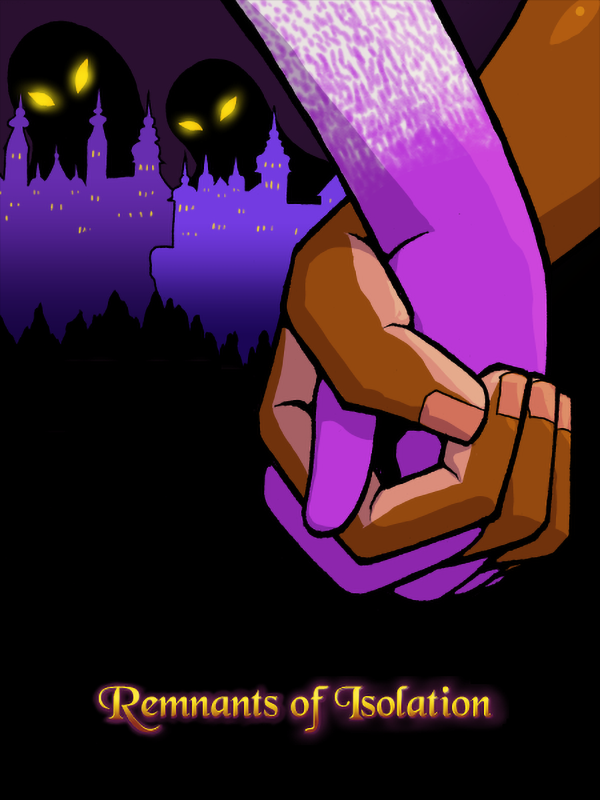

Remnants of Isolation
Remnants of Isolation
Details
|  | |
| Playtime | Not Played |
| Last Activity | Never |
| Added | 9/2/2024 19:36:05 |
| Modified | 9/2/2024 21:31:00 |
| Completion Status | Not Played |
| Library | Steam |
| Source | Steam |
| Platform | PC (Windows) |
| Release Date | 5/1/2015 |
| Community Score | 70 |
| Critic Score | |
| User Score | |
| Genre | Indie Role-playing (RPG) |
| Developer | Team Isolation |
| Publisher | Degica Games |
| Feature | Single Player |
| Links | Steam Twitch |
| Tag | |
Description
Grand Prize Winner of the 2014 Indie Game Maker contest.
Magic is a curse. A plague upon the world and those that live in it. Those that are born with this curse unwittingly sap the mana from the earth they stand in. In order to prevent these abominations from draining away the world's lifeblood, they are locked away in a castle in an isolated dimension. It is in this castle that the cursed are to remain, removed from society so that their magic does not harm normal people. They are to be kept here for the rest of their miserable lives.
At least, that's the way it should have been...
Suddenly, a loud crash is heard. A young girl, kept apart from the rest of the castle, looks up from the ground. The magical barrier that prevented her escape slowly dissipates. Standing up, she pushes open the gate and finds her first taste of freedom. Guide her as she teams up with a renegade mage boy to search for the truth behind the castle, her unique magic, and a way to escape.


Magic is a curse. A plague upon the world and those that live in it. Those that are born with this curse unwittingly sap the mana from the earth they stand in. In order to prevent these abominations from draining away the world's lifeblood, they are locked away in a castle in an isolated dimension. It is in this castle that the cursed are to remain, removed from society so that their magic does not harm normal people. They are to be kept here for the rest of their miserable lives.
At least, that's the way it should have been...
Suddenly, a loud crash is heard. A young girl, kept apart from the rest of the castle, looks up from the ground. The magical barrier that prevented her escape slowly dissipates. Standing up, she pushes open the gate and finds her first taste of freedom. Guide her as she teams up with a renegade mage boy to search for the truth behind the castle, her unique magic, and a way to escape.
Features
- A simple, but deep Spell Fusion system that allows for lots of experimentation.
- A heavy atmosphere made from a somber soundtrack, terrifying enemies, and a powerful tale.
- Simple puzzles that rely on each character's field abilities.
- A variety of locations to explore.
- A twist on traditional turn-based combat via MP charging.
- Discover the tragic stories of the castle's inhabitants by piecing together bits of information found throughout the adventure.
- 3 different endings affected by your actions.